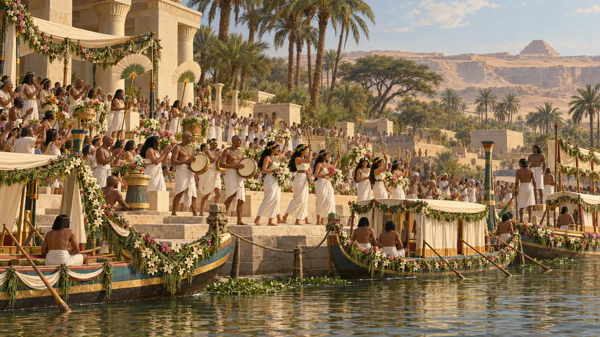
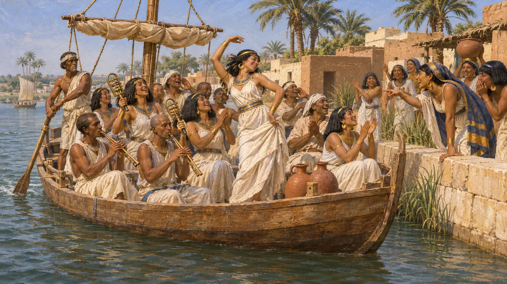
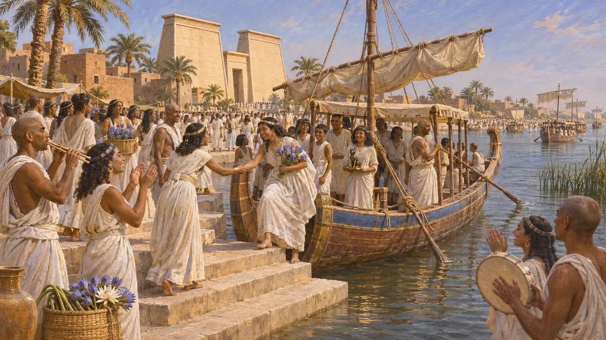
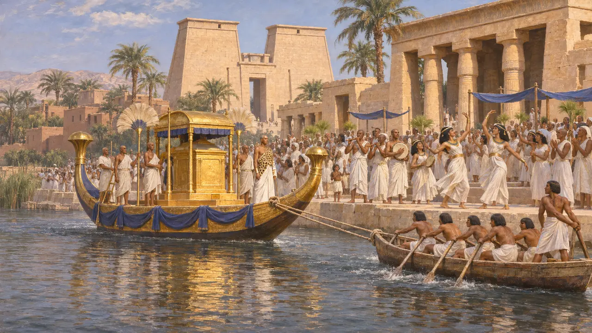
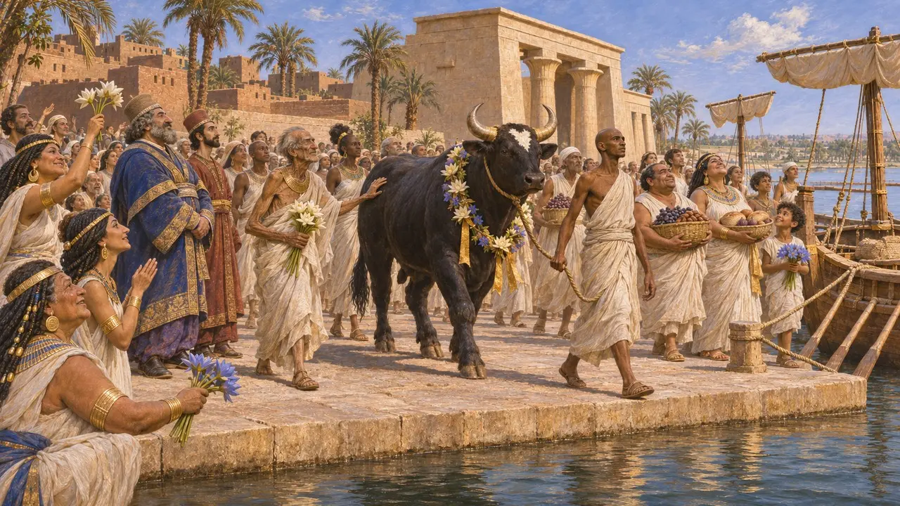

رصيف الأعياد
مرسى قوارب الأعياد على النيل، مصر، القرنان السادس والخامس ق.م
كانت الأعياد الدينية المصرية تجتذب حشودًا كبيرة، وكان كثير من الحجاج يأتون عبر النهر. ويصف هيرودوت قوارب مكتظة بالرجال والنساء تبحر إلى عيد باستت في بوباستيس وسط الموسيقى والغناء والتصفيق. وكان مرسى مثل هذه القوارب يخدم العبادة وحركة الملاحة النهرية التي تربط المدن المصرية معًا.
في اللعبة: تتبع ملاحظة اللعبة هيرودوت 2.59-60، لكنه يصف قوارب متجهة إلى بوباستيس في الدلتا. أما إتاحة الرصيف في منف واشتراط وقوعه ضمن أربع خانات من الماء فمن إعداد اللعبة، لا موقعًا تذكره المصادر.

الإبحار إلى بوباستيس
رواية قديمةيروي هيرودوت أن الرجال والنساء كانوا يبحرون معًا إلى بوباستيس، وفي كل قارب جمع كبير منهم. فبعض النساء يهززن الصنوج، وبعض الرجال يعزفون على المزامير طوال الطريق، والبقية يغنّون ويصفّقون. وكلما مرّ قارب بمدينة اقترب من الضفة، فتأخذ بعض النساء في السخرية من نساء المدينة، وترقص أخريات، وترفع أخريات أذيالهن. ويقول إنه كان يُشرب في بوباستيس من النبيذ أكثر مما يُشرب في سائر أيام السنة.
Herodotus 2.60

أعياد مصر الكبرى
رواية قديمةيعدّد هيرودوت ستة أعياد مصرية كبرى ويجعل عيد بوباستيس في مقدّمتها. ويطلق على الآلهة أسماءً يونانية: أرتميس لباستت في بوباستيس، وأثينا لنيت في سايس، وآلهة أخرى في بوصير وهليوبوليس وبوتو وبابريميس. وينقل زعمًا محليًا بأن 700,000 رجل وامرأة، عدا الأطفال، كانوا يجتمعون في بوباستيس. ويرى المؤرخون عمومًا أن هذا الرقم مبالغ فيه كثيرًا.
Herodotus 2.59-60

القوارب في العبادة المصرية
في السجلاتتسبق الشواهد المصرية على الأعياد النهرية زمن هيرودوت بكثير. فنقوش عيد الأوبت البارزة في معبد الأقصر تُظهر زوارق الآلهة تُجَرّ على النيل، يرافقها الموسيقيون والراقصون والجموع على الضفة. وكشفت التنقيبات في بوباستيس عن معبد باستت الكبير، مؤكدةً أهمية الموقع الذي يصفه.
Luxor temple, Opet festival reliefs; E. Naville, Bubastis, 1891

الأعياد في ظل الحكم الفارسي
متنازع عليهيقول هيرودوت إنه حين ظهر عجل أبيس جديد في منف، احتفل المصريون بالولائم في ثياب العيد. فظن قمبيز أنهم يسخرون من إخفاقاته، فطعن العجل. غير أن لوحة من لوحات أبيس تسجّل دفن عجل في السنة السادسة من حكم قمبيز، مع تابوت مُهدى باسمه. ويختلف المؤرخون: أهي رواية معادية، أم أنها تشير إلى عجل أبيس التالي الذي نفق في عهد داريوس؟
Herodotus 3.27-29; G. Posener, La première domination perse en Égypte, 1936
المصادر
- Herodotus 2.59-60
- A. B. Lloyd, Herodotus Book II: Commentary 1-98, 1976
- E. Naville, Bubastis, 1891
- Herodotus 3.27-29
- G. Posener, La première domination perse en Égypte, 1936
- P. Briant, From Cyrus to Alexander, 2002